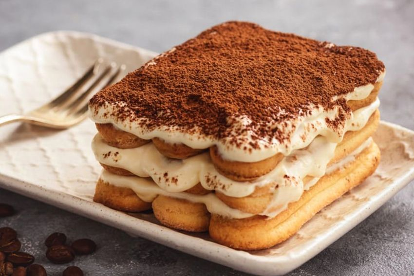
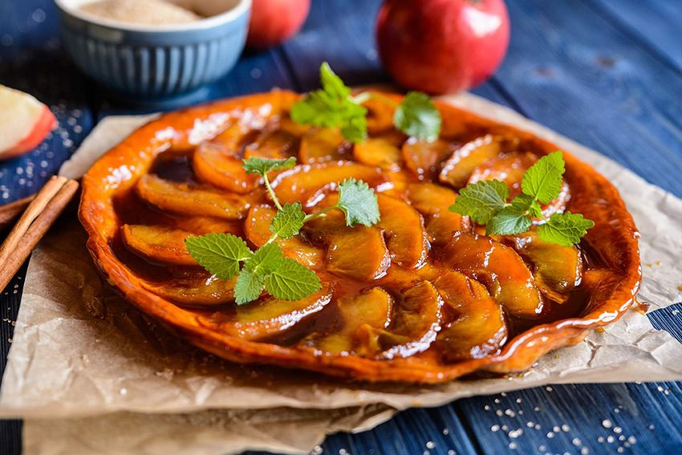
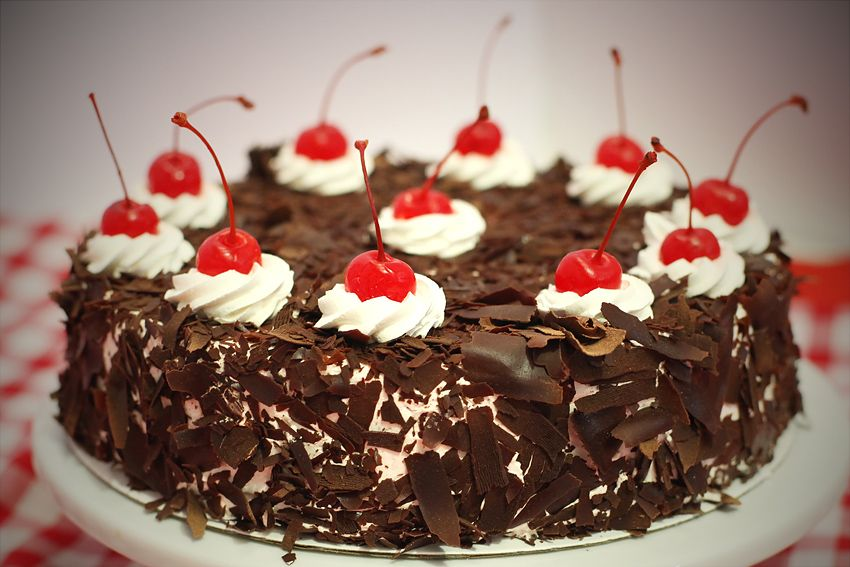
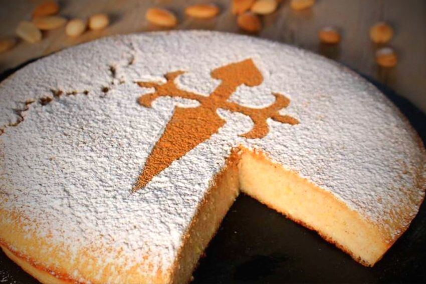
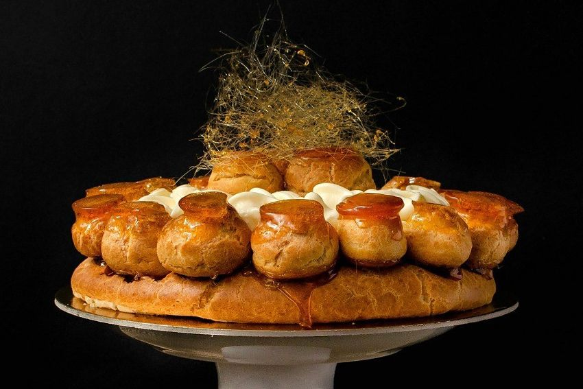
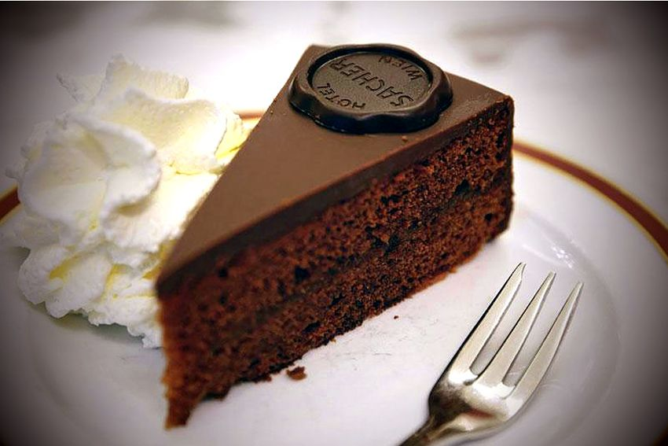
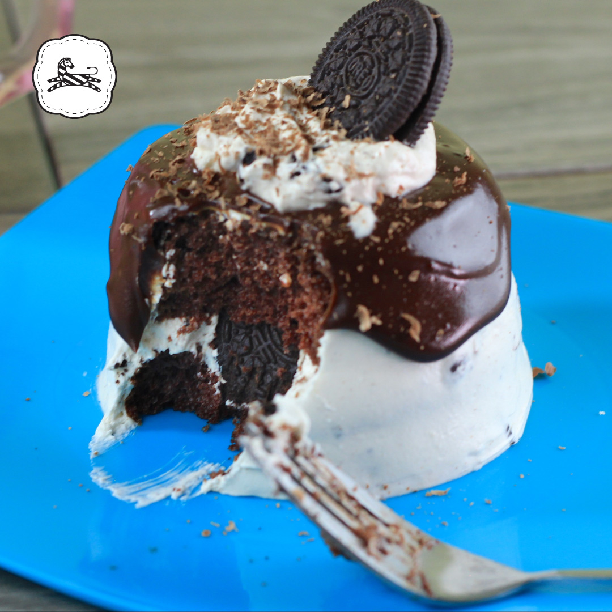

En nuestra pasteleria nos orgullece mostrar nuestros pasteles mas famosos.
Tiramisu
Una tarta que cuenta con multitud de variantes y formas diferentes de elaborarse y cuyo nacimiento está
repleto de historias y leyendas, una de las cuales vincula su origen a los burdeles y es que se cuenta
que en la década de los cincuenta los prostíbulos de la ciudad de Treviso comenzaron a ofrecer a sus
clientes un plato.

Rollo de Mango
En México algunas personas lo llaman Niño envuelto, pero para Caprichos, es rollo de mango. Con un
esponjoso
pan de vainilla, relleno de queso crema Philadelphia® y deliciosos trozos de mango fresco.

Tarta Tatin
Esta es una de esas grandes creaciones que se creo como fruto del error, en concreto la Tarta Tatin nació
en el hotel Tatin de Lamotte-Beuvron en 1889 y a consecuencia de un descuido de una de las hermanas que
lo regentaba, en concreto de su autora Stéphanie Tatin, a la cual se le olvidó poner en la clásica tarta
de manzana, la masa al fondo del molde, aunque también hay quienes cuentan que caramelizó por error las
manzanas. Sea como sea, lo cierto es que esta tarta es una de las más conocidas, y también un verdadero
manjar en el que destaca ese sabor dulce caramelizado y jugoso de las manzanas.

Selva Negra
Esta tarta original del estado de Baden y de una zona conocida como Foresta Negra de la que vendría su
nombre, es además una de las más conocidas y características de la gastronomía alemana y se caracteriza
por estar compuesta de varias capas de bizcocho de chocolate empapado en Kirsch (un tipo de licor de
cerezas). Esas capas de bizcocho se mezclan con un relleno de nata y con mermelada de cerezas, rematado
todo ello con un toque final de crema chantilly y virutas de chocolate que recubren la parte superior.
Realmente deliciosa.

Tarta de Santiago
La tarta de Santiago es una tarta tradicional de la cocina gallega y de la que se desconoce su origen ya
que es parecida a la Tarta de Elche. Una de esas tartas imprescindibles si pasas por tierras gallegas o
te decides a hacer el Camino de Santiago y que está compuesta por almendras, huevos, mantequilla,
azúcar, naranja y una característica capa de azúcar glass que cubre la parte superior y en la que con
una plantilla se dibuja la silueta de la Cruz de Santiago.

Saint Honore
Esta tarta junto con la Tarta Tatin, es uno de los postres más representativos de la gastronomía francesa
y una de esas tartas fáciles y deliciosas que todo amante de la cocina y del dulce debería intentar
hacer al menos una vez en la vida. Esta tarta Saint Honore, se compone de una base de profiteroles,
crema quemada y caramelo. Una tarta que cuenta con numerosas versiones diferentes, pero que fue obra del
repostero francés Fauvel Chiboust en 1846, cuyo obrador se encontraba en la Rue du Saint Honoré de
París, de ahí su nombre.

Sacher
Esta famosa y rica tarta elaborada con mantequilla, harina, huevos, mermelada de damasco, azúcar y
abundante chocolate, es uno de los postres más típicos de Austria y su receta original sigue
conservándose a día de hoy en el hotel Sacher de Viena en el más absoluto secreto. Pero para conocer sus
orígenes tenemos que remontarnos al año 1832, cuando el príncipe Clemens Wenzel Lothar von Metternich
encargó un postre especial para sus huéspedes. En aquel entonces el jefe de cocina se enfermó y fue
entonces cuando el joven aprendiz de 16 años, Franz Sacher, se encargó de preparar el postre.

Pay de Queso
Un pastel de queso o tarta de queso es un postre muy popular desde el siglo XX hecho a base de ricota,
queso quark, azúcar y algunas veces otros ingredientes, tales como: huevos, crema de leche o nata,
harina, patata, almendras o frutas.

Pastel de Oreo
Pastel con combinación de pan de chocolate y pan de vainilla, con relleno de crema Oreo y trozos de
galleta Oreo, forrado con más crema Oreo y ganash de chocolate.

Pastel de 3 Leches
El pastel, tarta, o torta de tres leches es un postre tradicional Mexicano, pero también conocido en
países como Albania, Japon y Corea del Sur."La fuente más obvia para difundir la receta debían ser los
fabricantes de leche evaporada y condensada.